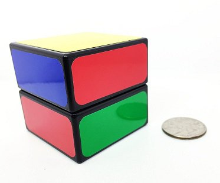
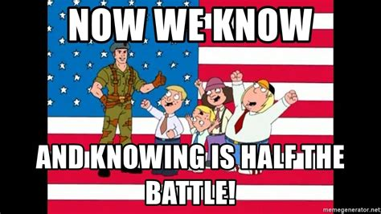

Your browser doesn't support the features required by impress.js, so you are presented with a simplified version of this presentation.
For the best experience please use the latest Chrome, Safari or Firefox browser.
Post Mortems:
A Guide to
Error
Prevention
* want to talk about creating a culture for problem prevention
* we will explore why this is difficult for most customers
What Went Wrong?
* most companies are attempting to answer: what went wrong
* talk about an incident: an app had service interuption during an upgrade
* ignoring the fact this is the wrong question
* we are really wanting to know: How can we stop this from happening again?
* its very important to ask the right question
* Having the wrong focus means drawing the wrong conclusions
* if you aren't pointed in the right direction, you will end up at the wrong destination
Important Terms...
Root Cause
Mechanistic Reasoning
Backwards Accountability
Counter-Factual
Failure
* Root cause (change this to trigger)
* Mechanistic Reasoning (belief that computers and automation are always the answer)
* Backwards accountability (as in backwards looking and contrasted with forward or future accountability)
* Counter-factual (any idea that hypothesizes what might have been)
* Failure (implies a knowledge of outcomes)
* almost all industries have done some sort of post-incident analysis
* the problem is that, despite best efforts, the same mistakes are often made
* we talk about a chain of events
* this implies linear progression (at least in part)
* you know the outcome and so you scrutinize all decisions... blame assigned
* its really hard to look back
* why was this path taken over another?
* having hindsight makes people exaggerate their ability to predict outcomes
Mechanistic Reasoning?
* we fall back on the belief that the system itself is perfect
* if it wasn't for those pesky humans...
* systems are neglected because it "would have worked"
--> Potential call out to automation gone wrong section of Toil talk
Traditional Approach: Case Study
* The Los Alamos nuclear lab had an embarassing incident
* 2 classified hard drives went missing
* They had data about nuclear weapons
* Investigators vowed to aggressively pursue the serious matter
* "Accountability and discipline" were preached from the mountain tops
* The hard drives were found behind a photocopier
* An area searched multiple times in the past
* The investigation found a "few bad apples" breached protocols and were negligent
* case closed right?
NOTE: this is a logo for a PUB
* Los Alamos went on to suffer 2 or 3 more lost hard drive incidents in the next couple of years
* When the case was audited by a 3rd party they found interesting info
* Systemic problems caused people to take short cuts
* regulations were onerous
* environmental stresses
* This event was just one of many infractions
THIS IS THE TRANSITION TO HUMAN ERRORS
* Turns out, unlike this guy, most people aren't trying to be incompetent
* People want some level of accountability
* Most people want to be recognized for being an expert in their job
* accountability should be perceived as fair
* investigators who know and understand the problem domain should be involved in the incident recap
* overwhelmingly, people do not want this to be done by management who *think* they know
Dealing With "Human Error"
* the right question is not "what" by "why"
* Only by knowing the factors that lead up to the decision can we hope to prevent it from happening again
Pilot "Errors"
* Project looked into 650 "pilot errors"
* Under pressure instincts were used
* Errors because env different from expected
* Airplane model varied
* Severity varied
* Need more experience
* No statistical significance
* Tooling needs to conform
* Project looked into 650 "pilot errors"
* Under pressure instincts were used
* Errors because env different from expected
* Airplane model varied
* Severity varied
* Need more experience
* No statistical significance
* Tooling needs to conform
* need to really think about tooling conforming to users
* Why did you make that decision in light of the environment you were working
* a good investigator asks why an action made sense at the time
* investigations are not performance reviews
* nor are they about discipline
* In fact they aren’t about what someone might have done differently.
* remember failure was an important term?
* Failure implies knowledge of outcome
* someone "failed to take action" implies all outcomes to paths are known
* looking back the path is clear, as is the failure
* backwards accountability: another important term
* the act of holding someone accountable for something in the past
* going to jail for something you did is backwards accountability
* This is the wrong approach
* you want to make sure triggers don't happen again
* avoiding the mistake in the future gives a sense of purpose and drive
Stubbing Your Toe Hurts...
* When you catch your foot on jagged sidewalk do you punish yourself?
* Should you have known better? Maybe...
* But it makes more sense to note the problem and make sure you don't trip again
* You're a lot more careful now aren't you?
More Auotmation!
* back to the idea of human errors...
* if it wasn't for that the system would have saved us!
* Could be... computers are very good at doing the same thing over and over... until they aren't

rubik's cubes simple -> medium -> medium hard -> hard -> complex
tracing problem interuption cartoon
* not saying automations are bad
* but they break randomly
* automations built by humans... who make mistakes
* why would we think the person who wrote automation or automation software is infallible but the person who has months or years of experience in your specific environment is inherently more flawed
TAKE A BREAK AT THIS SLIDE
How We THINK People Make Decisions...
* we view things as a chain of events
* looking back, of course the network lag caused the database being overloaded which obviously caused the website to respond slower
* we work backwards from an outcome and the risks are obvious
How To Catch Fly Ball
* for some reason we have an abnormally high expectation for technical people.
* all outcomes should be known. Of course you could just slow things down and take the right path
* when we apply these same standards to the real world it shows how absurd these expactations can be
* obviously we know all of the variables from the moment the ball is hit
* then all we have to do is plug in the formula
Everyone Remembers Trig right...?
* except we have no way to know wind speed
* ... or the spin of the ball
* as the person in the middle of the action can we really know all the vars?
How We Actually Do Things...
* The most success players ignore everything
* judge their distance according to perceived angle of the ball
* the point? what seems like the obvious decision path in hindsight is far from reality
* When you judge a fluid situation as if you know all the variables, you have to assume certainties where they may not exist and thus it leads to a flawed remediation.
2 Initial Decision Making Steps...
Step 1: Narrow down the options
Step 2: Evaluate pros/cons of remaining Options
* large number of possibilities... need to narrow it down to make a quick decision
* do a pros/cons to pick best path
* we know that there is a chance to miss an optimal route
* that's the trade off for discarding options
Factors In Making Decisions...
Risk Aversion
Temporal Discounting
Certainty Effect
Keep Options Open
* If you have 10% chance at winning $1000 but a 10% chance of losing $400 people will not partcipate
* Most people will take $50 now rather than wait and get $100
* You are more likely to pick the car based on colour as opposed to some feature you *may* use in the future
* people make choices based on how many options they might be able to keep open
We Also Avoid Decisions...
Status Quo Bias
Omission Bias
Anticipated Regret
Reactance Bias
* You don't like options because of unknown impacts
* You are more likely to leave a 'receive spam' button marked then to read through to find the option
* Any option which might be something you regret in the future will be avoided
* When someone says you can choose anything you want, EXCEPT this option

* If you want to avoid mistakes, you need to know WHY they happened
* to do that you need to know how people make decisions under pressure
* we want to know WHY this happened. Not focus on counter factuals
* Counter factuals are a bi-product of hindsight, NOT missed opportunities
Psychological Safety
* in 1999 Amy Edmonson studied clinical teams
* she found that high performing teams make more mistakes than low performing teams
* but they saved more lives as well
* Amy Edmonson discovered was that the high performing teams were admitting to more mistakes
* whereas the low performing teams, where more people died, were hiding theirs
* most of the time people sweep things under the rug for fear of reprisal
* no one wants to be the lone voice to speak up
* your entire team needs to be onboard
* if you don't get this right, morale suffers greatly
* often manifests in people putting in minimum effort
* remember our talk on toil?
* backlogs will suffer or become meaningless
* aligning people with where their talents and passions are can off set this
Red Hat Does This Well
* putting people where they are interested to be means higher quality output
* sure no job is perfect
* When you are passionate about a thing, you are significantly more likely to speak up
How To Grow This
Leadership needs to admit their fallibility
Make this a priority
Establish norms for how mistakes are handled
Create space for new ideas
Embrace Productive Conflict
The time of day matters
* leadership needs to admit
* make it priority
* * show empathy... what if it was you?
* new norms for handling mistakes
* * don't punish experimentation/risk taking (within reason)
* * encourage learning from failure
* * openly share lessons learned
* create space
* embrace conflict
* * how do we manage conflicting perspectives
* time of day
* * when you get mature enough, attempting to time this based on personalities in the team is good
* * there is a whole science around "when"
Four Stages Of Safety
* fear of rejection or embarassment
* we want to be included
* acceptance boosts confidence
Four Stages Of Safety: Learner
* being heard is important
* mistakes will be made
* some engagement, but still feeling vulnerable
Four Stages Of Safety: Contributor
* actively participates
* enthusiastic and changes
* starting to feel confident. Empowerment is very important
Four Stages Of Safety: Challenger
* innovative, creative and without fear of rejction
* encourages questioning of their ideas
* sees potential for success through failure
TAKE A BREAK AT THIS SLIDE
What Not To Do: Chain of Events
* I've mentioned it already.
* chains have a start, middle and end
* all linked together (more or less)
* need to avoid linear thinking
* while you need to pick a starting point out of necessity
* don't forget things can happen simultaneously
* chain of events treat cause an effect to be about the same magnitude
* ther are ALWAYS large number of factors
What Not To Do: Root Cause
* a root cause is simply where you stopped looking for problems
* semantics matter
* try thinking in terms of what triggered the incident
What Not To Do: Group Meetings
* Resist the urge to have a group meeting... at first
* memory will conform to what sounds about right
* need to have a neutral person who gathers the facts before having a meeting
* we want to try avoiding "refreshing" people's memories
What Not To Do: Personal Reporting
* the person(s) involved should not create initial report
* you are trying to recreate the world at each critical junction
* experts aren't always good at telling you why they are an expert
* they often need outside help to reconstruct events
What Not To Do: Simplest Answer
* Occam's razor is a thing: simplest of competing theories be preferred to the more complex
* however in this context, simplest answer often leads to who/what triggered the event
* this leads to blame
* This can signal to the rest of the company that you are interested in
* * quick answers
* * assigning blame
Prompting Questions
What Did You See?
What Knowledge Did You Have?
What Actions Were Taken?
What Was Observed?
What Did You Expect?
* What did you see
* What Knowledge did you have
* What actions were taken
* What was observed
* What Did you expect?
Prompting Questions
What Assumptions Existed?
What Was Your Impression Of the Situation As It Happened?
What Options Did You Think You Had?
What Made This Situation Difficult?
Where Did We Get Lucky?
* What assumptions existed
* What Was Your Impression Of the situation As It Happened?
* What Options Did you think you had?
* What made the situation difficult
* Where did we get lucky
Don't Be Afraid to Be New
* it is useful to take the vulnerable position of not knowing when conducting the review
* genuinely asking for help will get a good response
* with some practice you can coax people to explain things simply which forces them to think through their answers
Just Say No One Needs To Know
* Where possible limit outsiders knowing "who" did it
* successful orgs don't make it known who is on call (outside of the paging system which need to know)
* the message: it doesn't matter who was on when the mistake was made...
* when we consider environmental factors, anyone could have done it... therefore irrelevent
Recommendations Not Root Causes
* orgs have to be careful not to fall into old habbits
* particularly if 'real' recommendations are rejected
* they could be rejected because of too much faith in the systems or not enough trust in the reporting structure
* if management turns a blind eye or ignores solid recommendations, the company will see little change
* eventually real recommendations will dry up
* left with things the workers think might actually get fixed instead of what actually needs work
* more likely reports will be no-nonesense because person writing was not involved in incident (no feelings)
* If I had to sum up, organizations need to be humble
* the path to success will have setbacks
* no method is perfect
* those who have a full head have no more room for knowledge
* if you think you already know, you'll never learn or grow